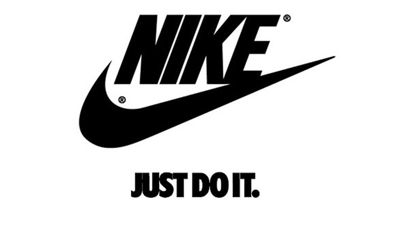

We all heard of shoes going for 50$, 100$, and even thousands of dollars. But what if I told you the most expensive shoe sold isn't even in the 1 million mark. The most expensive shoes sold were the Jordan 13s Bred, better known as the last dance kicks from MJ worn during the 1998 NBA Finals where MJ took home his final and 6th ring. They sold at auction for 2.2 million dollars.
Jordan 13s Last Dance Breds
Nike's Slogan
Nike, being one of the most recognized brands in the country, has their famous slogan which anyone who knows Nike must know: Just Do It. But, what if I told you that came from a murderer on his final day? Gary Gilmore had committed a double murder and was given death as a result of his crimes in 1977. He was to be shot by 5 gunmen behind a concealed curtain, and when asked his final words he replied Let's do it.

Just Do It!
First Adidas Shoes
Adidas shoes have not always been my personal favorite but they still are some comfy cool shoes. The first shoes were registered on August 18, 1949, shown above. By 1970, the shoes progressed in looks and were well known in the sports community and have only grown since then. With having major deals in basketball with Damian Lillard and Derrick Rose, even with superstars like Kanye West.